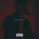

Bryson Tiller
R&B
Bryson Tiller est un chanteur, rappeur et auteur-compositeur américain né en 1993 à Louisville, dans le Kentucky. Il se fait connaître au milieu des années 2010 et devient rapidement une figure importante du R&B moderne. Son style mélange R&B, hip-hop et trap. Parmi ses principaux albums, on retrouve TRAPSOUL, True to Self, Anniversary et Bryson Tiller.
Discographie

Trapsoul (2015)
Best track: Don't

True To Self (2017)
Best track: Somethin Tells Me

Anniversary (2020)
Best track: Inhale

Bryson Tiller (2024)
Best track: Whatever She Wants
Solace & The Vices (2025)
Best track: a completer